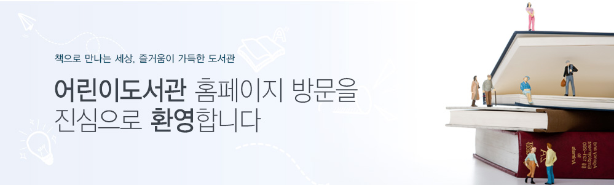

공지사항

우리 도서관은 1979년 ‘세계 어린이의 해’를 맞이하여 세워진 우리나라 최초의 어린이 전용 도서관입니다.
이후 40여 년간 한결같이 어린이들이 독서를 생활화하여 책 속의 다양한 세상을 체험하고 호기심을
키워나갈 수 있도록 노력하고 있습니다.
특히 주제별로 균형 잡힌 자료를 수집하고 올바른 정보를 제공함으로써 어린이들이 제대로 정보를 탐색하고
자기주도적으로 학습할 수 있도록 도와주고 있습니다.
또한 독서회, 독서증진대회, 체험중심의 진로지도 등 다양한 프로그램을 통해 어린이들이 소질을 개발하고
미래를 향한 인재로 커 나가도록 힘쓰고 있습니다.
어렸을 때의 독서습관은 평생 배움의 시작입니다. 앞으로도 어린이와 함께 성장하며 미래를 열어가는
도서관이 될 수 있도록 정성을 기울이겠습니다. 감사합니다.
서울특별시교육청어린이도서관장이 미 정
| 역대 | 성명 | 재임기간 |
| 제26대 | 이미정 | 재임중 |
| 제25대 | 서운택 | 2020.7.1.~2021.6.30. |
| 제24대 | 박미환 | 2018.1.1.~2019.12.31. |
| 제23대 | 홍순영 | 2015.7.1.~2017.12.31. |
| 제22대 | 유송숙 | 2013.1.1.~2015.6.30. |
| 제21대 | 김윤순 | 2011.7.1.~2012.12.31. |
| 제20대 | 김동령 | 2008.8.14.~2011.6.30. |
| 제19대 | 정숙동 | 2007.1.1.~2008.8.13. |
| 제18대 | 김순자 | 2004.7.1.~2006.12.31. |
| 제17대 | 이숙자 | 2003.1.1.~2004.6.30. |
| 제16대 | 박길호 | 2000.5.1.~2002.12.31. |
| 제15대 | 최정자 | 1999.1.15.~2000.4.30. |
| 제14대 | 이숙자 | 1997.9.1.~1999.1.14. |
| 제13대 | 김동선 | 1996.7.31.~1997.8.31. |
| 제12대 | 심윤재 | 1995.7.1.~1996.7.30. |
| 제11대 | 맹일우 | 1994.1.1.~1995.6.30. |
| 제10대 | 정연의 | 1991.10.14.~1993.12.31. |
| 제9대 | 박종량 | 1990.1.1.~1991.10.13. |
| 제8대 | 곽병대 | 1989.7.1.~1989.12.31. |
| 제7대 | 김병주 | 1988.7.30.~1989.6.30. |
| 제6대 | 이성탁 | 1987.11.1.~1988.7.29. |
| 제5대 | 한경희 | 1985.7.1.~1987.10.31. |
| 제4대 | 김승현 | 1983.3.14.~1985.6.30. |
| 제3대 | 정봉채 | 1981.4.1.~1983.3.13. |
| 제2대 | 박일곤 | 1980.8.1.~1981.3.31. |
| 초대 | 이병목 | 1979.5.4.~1980.7.31. |